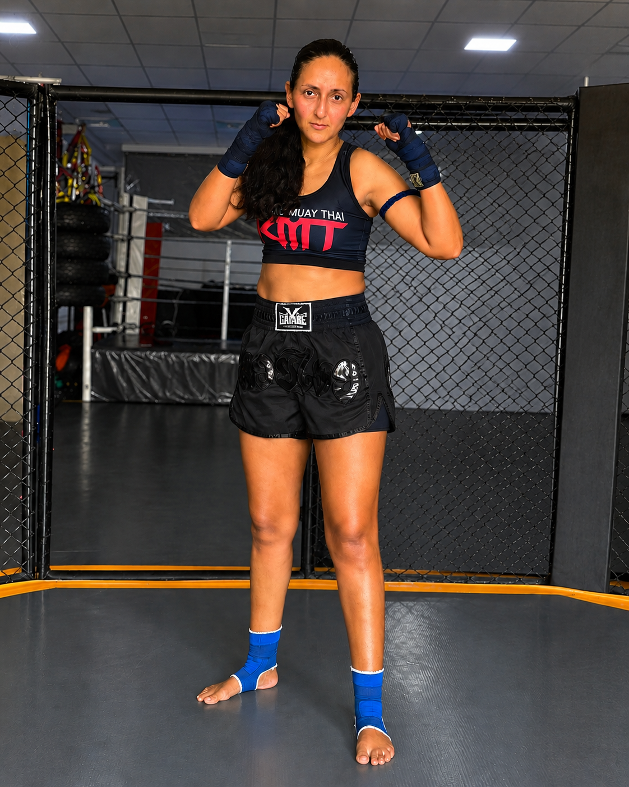
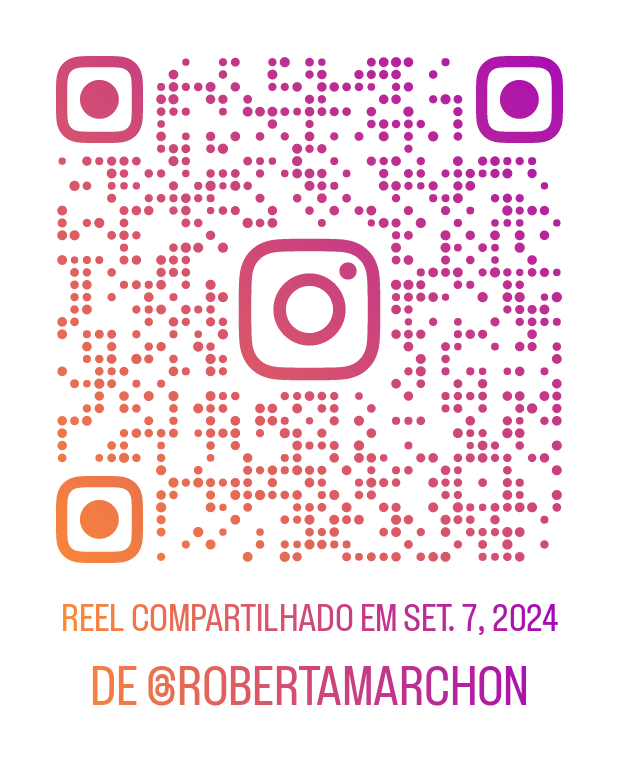

A nutrição esportiva vai muito além da estética. Ela influencia diretamente o desempenho, a recuperação muscular, a prevenção de lesões e a disposição para treinar — seja para quem pratica musculação, artes marciais ou busca mais qualidade de vida.

Além da atuação clínica, Roberta vivencia os desafios reais da alimentação para treinos — recuperação muscular, energia para os rounds e disciplina alimentar. Essa vivência permite um acompanhamento mais próximo e genuinamente individualizado.
Os carboidratos são a principal fonte de energia para exercícios de alta intensidade. Eles ajudam a manter o rendimento durante treinos de musculação e modalidades exigentes como o Muay Thai, prevenindo a fadiga precoce e preservando a massa muscular.
Batata-doce, arroz, aveia, frutas e mandioca são ótimas fontes que podem compor uma estratégia nutricional eficiente — e acessível. O timing correto do carboidrato (antes, durante ou após o treino) depende dos seus objetivos e do tipo de exercício praticado.
As proteínas são essenciais para a manutenção e construção da massa muscular. Após os treinos, elas auxiliam na recuperação das fibras musculares e na adaptação ao exercício — reduzindo dores e acelerando a progressão.
Carnes magras, ovos, leite, iogurte grego e leguminosas são fontes proteicas que podem ser estrategicamente incluídas nas refeições. A distribuição ao longo do dia é tão importante quanto a quantidade total consumida.
Mesmo uma desidratação leve (1–2% do peso corporal) pode comprometer o rendimento físico, aumentar a percepção de esforço e dificultar a recuperação. Manter uma ingestão adequada de líquidos antes, durante e após os treinos é uma das estratégias mais simples e eficazes para otimizar os resultados.
Creatina, whey protein e cafeína possuem evidências científicas robustas para situações específicas. No entanto, o uso deve ser sempre individualizado e orientado por um profissional habilitado — evitando custos desnecessários e riscos à saúde.
A base de qualquer estratégia continua sendo uma alimentação equilibrada e adequada à rotina do praticante. Suplementos complementam; não substituem uma boa alimentação.
Esportes de combate exigem explosão muscular, resistência aeróbica e concentração. Uma estratégia nutricional adequada contribui para melhor recuperação entre treinos, manutenção ou ajuste do peso corporal e desempenho mais consistente durante os rounds.
Roberta alia sua experiência clínica à vivência real nos tatames — o que permite desenvolver planos alimentares que funcionam para quem treina de verdade, sem fórmulas genéricas.


Acompanhe conteúdos sobre alimentação, saúde e rotina esportiva no Instagram:
@robertamarchonSeja para emagrecer, ganhar massa muscular ou melhorar sua performance esportiva, um acompanhamento nutricional individualizado faz toda a diferença. Atendimento presencial em Itaboraí e consultas online para todo o Brasil.
Agendar consulta pelo WhatsApp